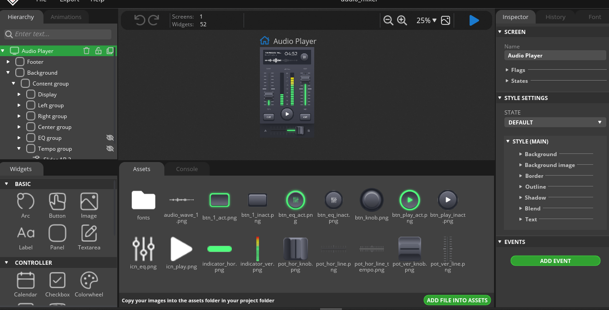
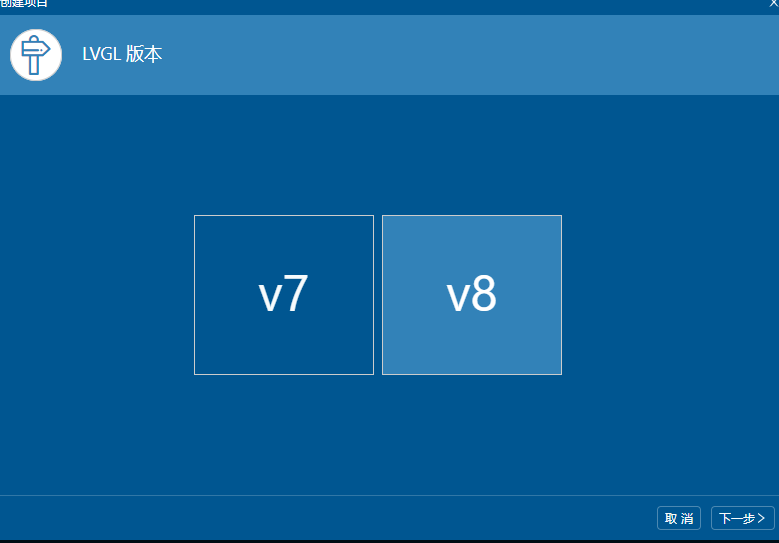
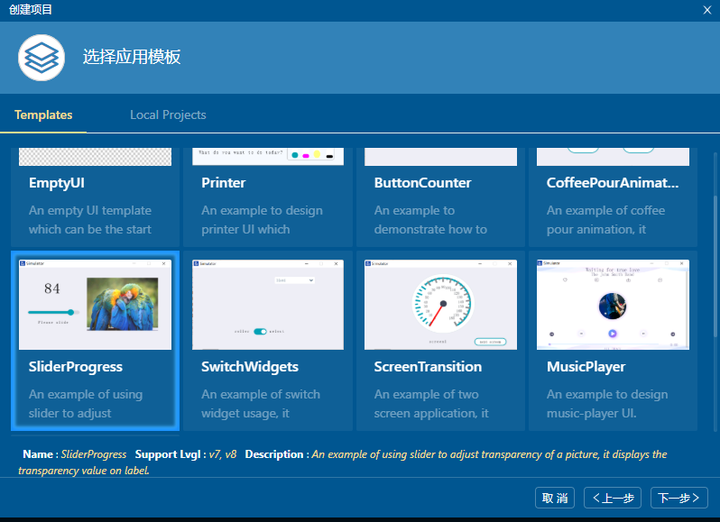
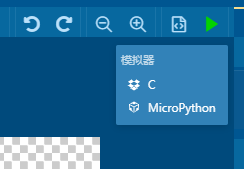
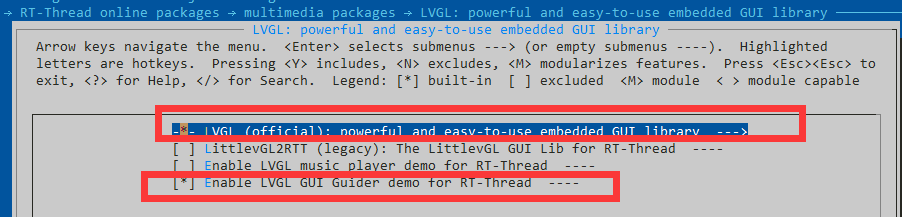
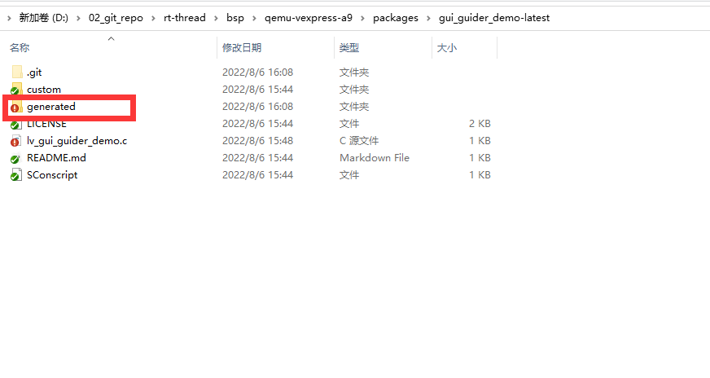
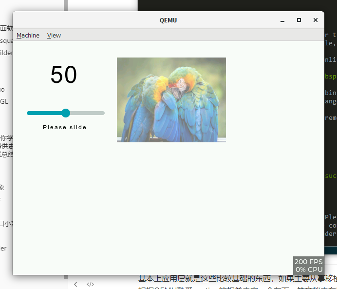

9. LVGL 学习小计 –（一） 应用层
9.1. 简介
GUI 是嵌入式里面常用的领域，有手表等应用来开发很多应用领域。LVGL是一款免费的GUI。实际上GUI很多都是收费的，像QT等都是收费的。而LVGL就是免费的它用的license是MIT license。可以免费商用。由于是商用免费的，所以如果您觉得好用，欢迎来一起维护，因为这个项目也是一些开源开发者在业余时间服务大家的，您也可以通过捐献来支持这些项目，或者帮忙推广，翻译文档等。
硬件要求
FLASH >64KB （推荐180KB)
RAM > 8KB (推荐24KB)
C99语法
LVGL大体上有两个方向，
应用层设计界面
移植层主要涉及到如何快速将LVGL应用到其他的芯片开发板上
本文先讲一下应用层如何设计界面，先用起来。然后会根据实际操作如何让LVGL快速使能起来
应用层设计界面软件
一个方向是应用和设计GUI等漂亮的界面，这个方向其实更适合女生，通常是调用一些API等来实现漂亮的功能。由于LVGL的易拓展性，有很多种平台来设计界面软件：
官方设计器squareline
https://squareline.io/
这个设计器的界面非常漂亮，个人免费使用，不能商用，商用要收费129美元一个月一个人，还是挺贵的。想要设计的好看一点，自己玩玩的，可以用这个来设计界面
下面这个页面是example。确实很漂亮。
https://squareline.io/demos

NXP gui builder
https://www.nxp.com/design/software/development-software/gui-guider:GUI-GUIDER
NXP官方提供了一款NXP的GUI BUILDER 工具，免费的。对NXP的平台支持的很好，目前支持到8.2.0 版本。最新的8.3.0版本不支持。其他平台也可以使用这个工具来学习LVGL。很方便
LVGL模拟器
上面介绍的是设计软件，如何拖控件等，类似于C#，JAVA等visual studio等工具设计界面。下面介绍几款LVGL 模拟器。也就是说你有LVGL的code。想跑一下看下demo的效果如何。
模拟器也是学习GUI的一个很重要的工具，你可以不用开发板，直接先试着了解LVGL里面的基本的原理，可以不需要购买昂贵的硬件开发板。官方介绍有以下几种模拟器：
官方链接
https://docs.lvgl.io/master/get-started/platforms/pc-simulator.html
Eclipse with SDL driver: Linux 和 Mac
CodeBlocks: Windows （简单方便推荐使用）
VisualStudio with SDL driver: Windows
VSCode with SDL driver: Linux 和 Mac
PlatformIO with SDL driver: Linux 和 Mac
以上几种模拟器都可以根据官方文档模拟成功，
我额外添加几款模拟器QEMU ， visual studio
QEMU
https://github.com/RT-Thread/rt-thread/tree/master/bsp/qemu-vexpress-a9
RT-THREAD 官方提供的QEMU 就可以跑lvgl
这个非常好用，也可以用RT-STUDIO 跑qemu等应用，直接看readme就可以了。
Visual Studio
https://github.com/RT-Thread/rt-thread/tree/master/bsp/simulator
这个也是RT-THREAD提供的BSP ，也是可以模拟的，如果你以前用visual studio用的比较多的话，可以看下这个bsp,也是可以跑LVGL的。具体的如何使用可以参考视频
RT-Thread社区与LVGL社区梦幻联动：教你如何基于RT-Thread运行LVGL官方软件包
https://www.bilibili.com/video/BV1YM4y1F7fX?from=search&seid=5764906851487910438&spm_id_from=333.337.0.0
9.2. 如何学习设计LVGL
NXP的gui builder功能基本够用了，能够设计出很多漂亮的demo了。
先第一步熟悉熟悉官方的几个demo，脑子里大概有一些概念，下面我提供几个API教程。
如果想要更酷炫的界面，而且不考虑商用的话，可以学习squareline 设计器，确实很漂亮。
官方API文档
https://docs.lvgl.io/master/widgets/index.html
官方文档肯定是比较详细的，也比较正规的。所以一定要稍微知道网站在哪里。可以去查。
中文翻译
http://lvgl.100ask.net
韦东山提供了一版中文翻译版本，很方便英文看起来费劲的小伙伴。
CSDN教程
一篇文章足够你学习嵌入式GUI LVGL技术，提供史上最全的LVGL技术文章总结，文档代码下载总结）
一篇文章足够你学习嵌入式GUI LVGL技术，提供史上最全的LVGL技术文章总结，文档代码下载总结）_Wireless_Link的博客-CSDN博客_lvgl
这篇CSDN讲的比较好，可以如果想设计好看的界面可以深入学习一下。
9.3. LVGL 入门知识
Objects 对象
EVENT 事件
style风格
Widgets窗口小部件
按钮，滑块，标签，图标等图形化组件就叫做窗口小部件。在文档Widgets（小部件）中可以找到列表
9.4. qemu实战
讲了这么多应用的东西，那究竟我们要怎么用呢？这边因为每个人的开发板都不一样，以qemu为例，上层设计以NXP gui builder为工具设计。
NXP gui builder
首先我们先用NXP 来简单设计一个demo
版本选择v8版本

随便找个 demo

然后直接生成工程

这个时候我就可以看到界面图片了。
找到工程下面的generated文件夹， 将这个文件夹全部复制到qemu的目录下面
qemu 设置
qemu里面
选中软件包

之后找到对应的软件包中的generated 文件夹

将刚才gui builder 中的文件夹里面的东西全部替换过来。
这边弄好之后，直接实行scons -j4 进行编译
会发现有些编译错误找不到lvgl.h
主要将lvgl/lvgl.h 改成lvgl.h即可
编译之后生成之后执行./qemu.bat
就可以看到效果了

9.5. 总结
基本上应用层就是这些比较基础的东西，如果主要从事移植层相关的东西，其实只需要熟悉QEMU如何使用即可，根据QEMU熟悉porting的相关内容，会在下一篇文档中有所介绍。当然如果想要设计出漂亮的界面的话，这篇文章里面的链接基本够用和够学了，主要建议用nxp builder来构建或者用官方的工具来学习构建（如果不商用的话）。
9.6. 参考文档
开发板的入门教程：https://lvgl.io/developers
LVGL的教程和文档：https://docs.lvgl.io/。
韦东山老师提供了LVGL中文文档：http://lvgl.100ask.net
9.7. PORTING 篇
https://github.com/supperthomas/LVGL_F407_PORING_GUID